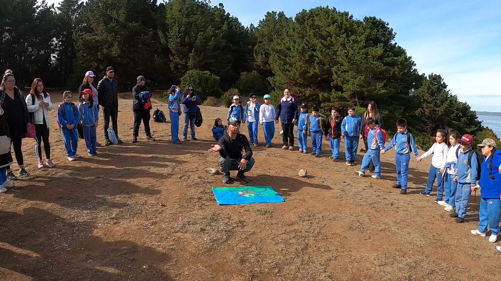

Línea base de invertebrados
Caracterización de entomofauna y artrópodos terrestres mediante diseño de muestreo, trabajo de campo, análisis taxonómico y documentación técnica.

Servicios
Diseñamos cada servicio según las características del proyecto, el territorio y sus requerimientos técnicos.
Estamos en el ambiente
Nuestra consultoría combina trabajo de terreno, análisis taxonómico y elaboración técnica para acompañar procesos ambientales en el marco del SEIA.
También desarrollamos experiencias de educación ambiental que acercan el conocimiento científico a empresas, comunidades y establecimientos educativos.
Consultoría ambiental
Caracterización de entomofauna y artrópodos terrestres mediante diseño de muestreo, trabajo de campo, análisis taxonómico y documentación técnica.
Levantamiento de información de fauna silvestre para caracterizar los componentes del área de estudio y apoyar la evaluación del proyecto.
Seguimiento de componentes biológicos y generación de registros comparables para apoyar la gestión ambiental.
Identificación especializada de ejemplares y organización de resultados con criterio científico y trazabilidad.
Identificación de zooplancton, fitoplancton, zoobentos y fitobentos de sistemas dulceacuícolas.
Sistematización, análisis y presentación de la información generada para una comunicación clara de resultados.
Terreno · laboratorio · análisis · información técnica

Educación ambiental
Diseñamos actividades participativas que promueven la observación, la curiosidad y la comprensión de los ecosistemas.
Cómo trabajamos
Definimos el alcance y la metodología antes de ejecutar, para entregar resultados claros y pertinentes.
Revisamos necesidades, contexto y requerimientos.
Proponemos alcance, metodología y planificación.
Desarrollamos el trabajo técnico o educativo.
Organizamos resultados y recomendaciones.
Cotiza tu proyecto
Evaluaremos el alcance y la solución más adecuada para tu organización.